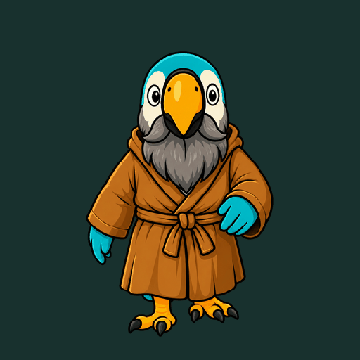
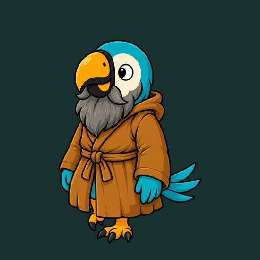
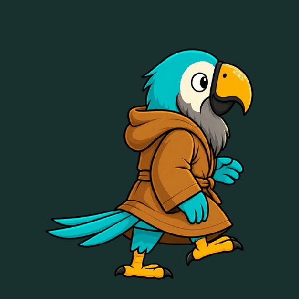
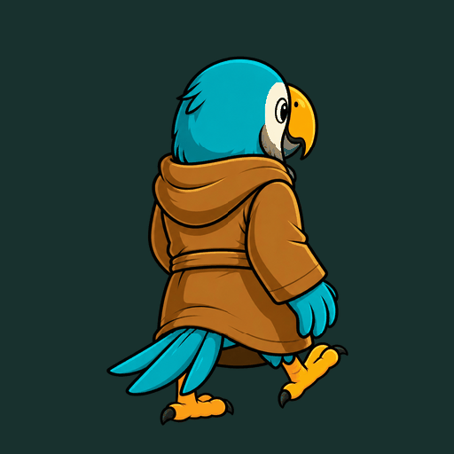
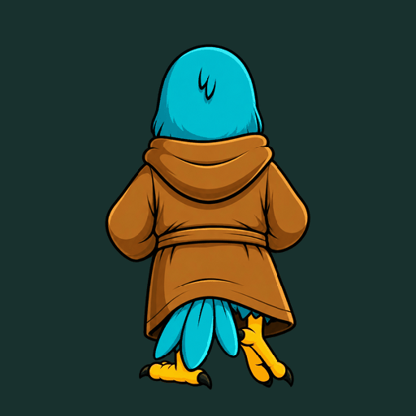

Walking source frames
South, southwest, east, northeast and north. Eight poses per full walking cycle, with three additional directions supplied by mirrors.





Walk in the grove · Inspect all 45 poses · Inspect edges · Find and use the source files


The source is in apps/games/lab/assets/macaw/walk/images/. Walking speed follows the measured stride and the macaw's size.